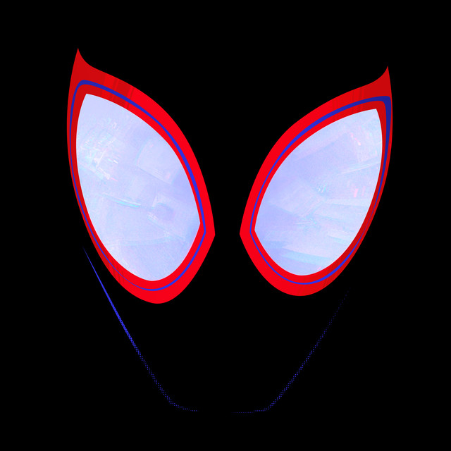

인생 영화 (1) - 웡카
원래는 뮤지컬 스타일의 영화를 싫어하는데, 이 영화는 괜찮았어요.
영화 보는 내내 순수하게 행복해지는 느낌이랄까? 사는 게 빡빡하면 관람 추천드립니다.
안녕하세요, 엠제이입니다!
굴 때문에 죽다가 살아났습니다.
여러분은 꼭 익혀드세요. 익힌 것도 맛있으니까요.
Everglow |
 If tomorrorw it's all over |
Casualties |
 Always remember us this way |
Before you go |
LifeTime |
Live, Laugh, Love |
High hopes |
 Sunflower |
다들 영화 즐겨보시나요?
저는 좋아합니다. 영화관에 나오면 무조건 챙겨봐요.
가장 최근에는 캡틴아메리카를 봤네요. 나쁘지 않았어요.
저는 슬픈 영화나 드라마를 봐도 울지는 않는데요, 딱 한 번 울었습니다.
신과함께1 보신 분 있나요? 저만 울었나요?
전 영화관에서 처음으로 훌찌럭거렸는데 옆을 보니까 다들 꺼이꺼이 우시더라구요.
그래서 그냥 기억에 남는 최근에 본 영화 3개를 골라봤습니다.
원래는 뮤지컬 스타일의 영화를 싫어하는데, 이 영화는 괜찮았어요.
영화 보는 내내 순수하게 행복해지는 느낌이랄까? 사는 게 빡빡하면 관람 추천드립니다.

고르고보니 이것도 뮤지컬 영화네요.
우연히 최근에 또 봐서 지금까지 아마 4번정도 본 것 같아요.
꿈과 사랑을 표현한 영화라고 생각이 드는데 17살 때 본 느낌이랑 지금 본 느낌이 매우 달랐어요.
여러 생각을 하게 한 영화입니다. 추천